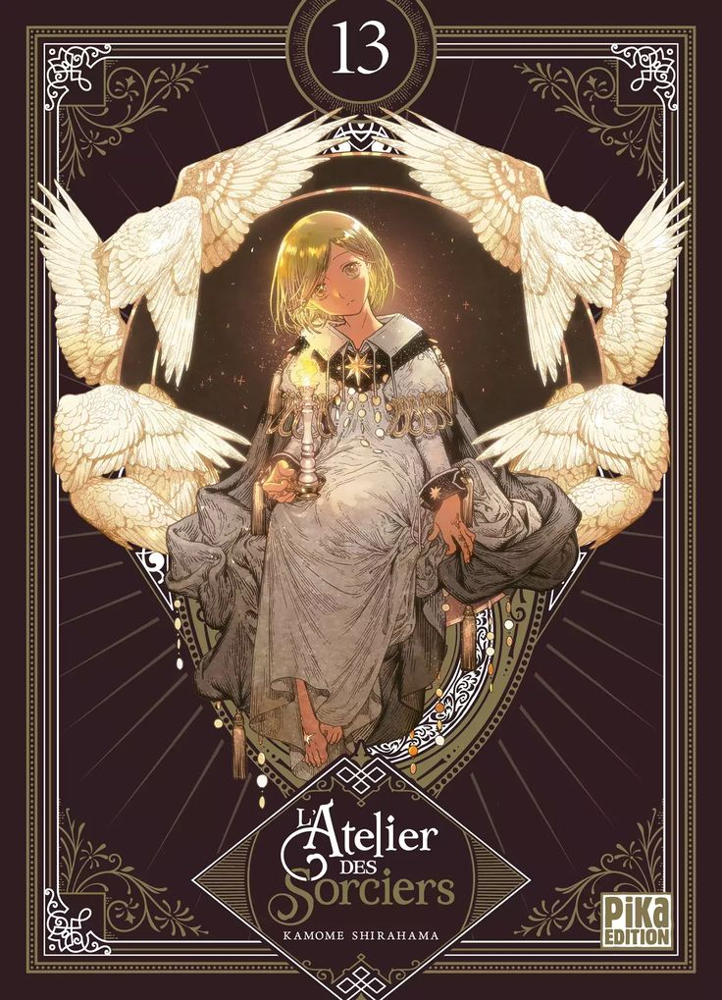

Witch Hat Atelier
Thể loại: Fantasy
Mô tả:
Witch Hat Atelier là một bộ fantasy – phép thuật – trưởng thành với nét vẽ tinh xảo và thế giới phép thuật được xây dựng cực kỳ logic. Truyện kể về hành trình học hỏi phép thuật không chỉ bằng tài năng, mà bằng hiểu biết, trách nhiệm và lựa chọn. Dưới vẻ ngoài cổ tích là những câu hỏi sâu sắc về tri thức, quyền lực và điều cấm kỵ.
Tóm tắt cốt truyện:
Coco là một cô bé bình thường, luôn mơ ước trở thành phù thủy dù tin rằng phép thuật chỉ dành cho những người sinh ra đã có năng lực. Một biến cố bất ngờ khiến Coco phát hiện ra bí mật thật sự của phép thuật, đồng thời vô tình phạm phải điều cấm kỵ nghiêm trọng. Được phù thủy Qifrey nhận làm học trò, Coco bước vào thế giới phép thuật với tư cách người học việc. Trong quá trình học tập cùng các bạn đồng môn, cô dần hiểu rằng phép thuật không chỉ là sức mạnh, mà còn là trách nhiệm lớn lao. Mỗi phép vẽ, mỗi quyết định đều có thể mang lại hậu quả không thể đảo ngược. Witch Hat Atelier theo chân Coco trên con đường trưởng thành, nơi cô học cách đối diện với lỗi lầm, bảo vệ điều mình tin tưởng và tìm ra ý nghĩa thật sự của phép thuật.
Bình luận
Vui lòng đăng nhập để bình luận.